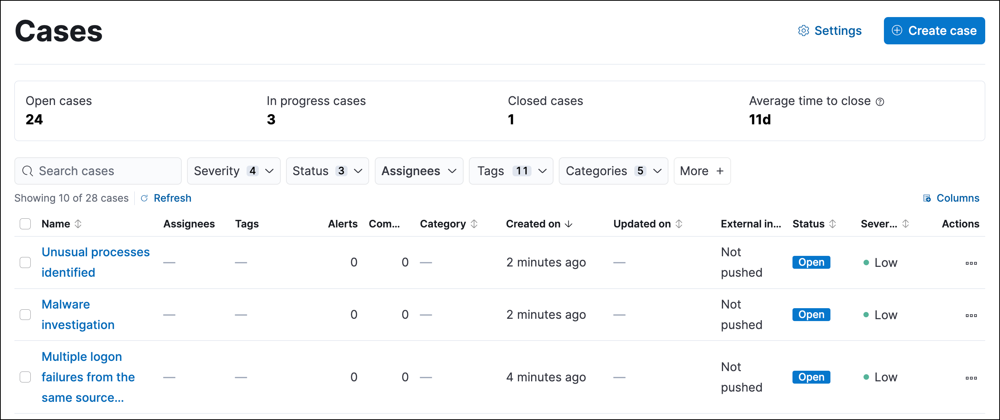

Cases
editCollect and share information about security issues by opening a case in Elastic Security. Cases allow you to track key investigation details, collect alerts in a central location, and more. The Elastic Security UI provides several ways to create and manage cases. Alternatively, you can use the Cases API to perform the same tasks.
You can also send cases to these external systems by configuring external connectors:
- ServiceNow ITSM
- ServiceNow SecOps
- Jira (including Jira Service Desk)
- IBM Resilient
- Swimlane
- Webhook - Case Management
